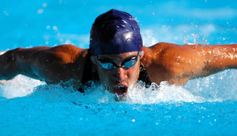
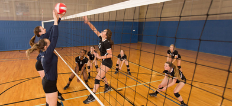
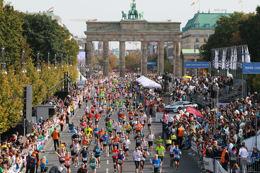

Schwimmen für Entspannen
Blog post by Morty

Only when I get properly in the water that I really am sure of my new goals. I need to get back into that kind of competitive mindset where I'll start to think about the goals and that will only really come with the rhythm of training. But it's likely
I will swim some different events that I haven't done much of at international level. More backstroke, maybe some sprints. Stuff I've not concentrated on before. That diversity will keep it interesting for us, for me and Bob, and set us some new
challenges. But, like I said, I guess I will only really be sure about these new events I'm going to swim once I'm training on a daily basis. That will really dictate the goals I set myself. But, sure, in my own head I have a good idea – basically
I want to have a crack at those events that I haven't really swum too much before at international level.
Posted on 5.02.2017
Breaking Bad auf dem Volleyballspielplatz
Blog post by Rick

So, guys, I am more than happy to have my first blog post just two days after I have announced the blog :). I know I’ve promised you to hear from me back this Saturday but surprisingly (in a very positive way!) I was contacted by a Bulgarian girl
who kindly asked me if it is possible to have a post about Mr. Bulgarian Volleyball Gordan Lyutskanov and if it was possible to post it on Monday. Firstly I wanted to save it to Saturday but it results that the young Bulgarian
volleyball player has today his Birthday! So, as a matter of fact, this article is the gift from Malinka Dimitrova to Mr. Bulgarian Volleyball. And I am sure he will be well surprised (although I do not know him personally). Because
the story in the article might be only about how a guy started to play volleyball and turned out to be successful. But the story of the post is about how good friends want to wish you Happy Birthday and shout it loudly all over the world!
Posted on 19.03.2017
Running in Berliner Marathon 2k17
Blog post by Morty

To win a marathon in a record time, you need to have pacemakers, sometimes called "rabbits" in runners' circles. These guys are often up-and-coming young athletes who run with the top competitors in the early stages of the race to keep your speed
up. By doing so, they help push them to the finish line in a record time. At the start line for this year's race I notice a rabbit in front of me too. This one is dressed head to toe in a rabbit costume though. I'm certainly not going to keep
pace with a guy in a fluffy pink onesie, and I soon overtake him as soon as we set off. Over the first few kilometers the streets are lined with onlookers, even though this part of Berlin actually isn't a residential area. We are running through
the city's main park, the Tiergarten, and many friends and family members gather here to cheer on their loved ones or hold up a sign. Once again, like every year, it's amazing to see so many national flags here as well. The red and white of Denmark
seems to be everywhere I look. A lot of runners from up north traditionally travel down to take part in the Berlin Marathon.
Posted on 21.03.2017